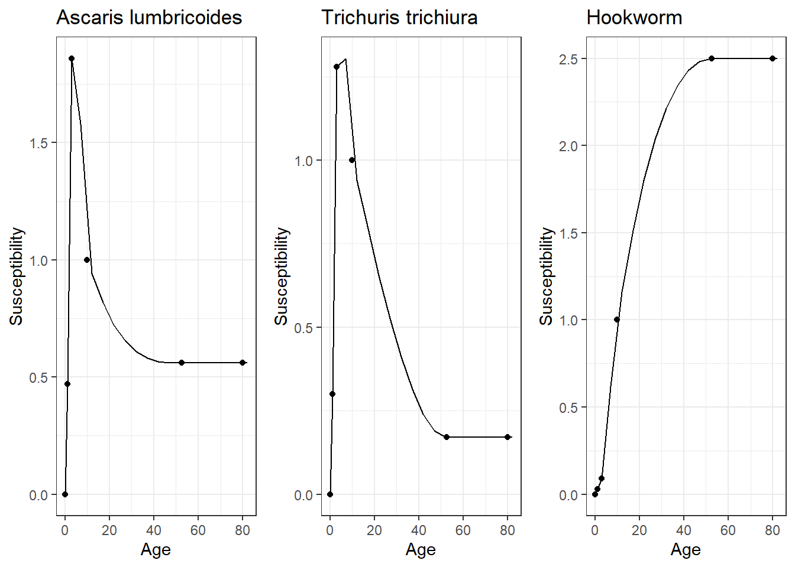
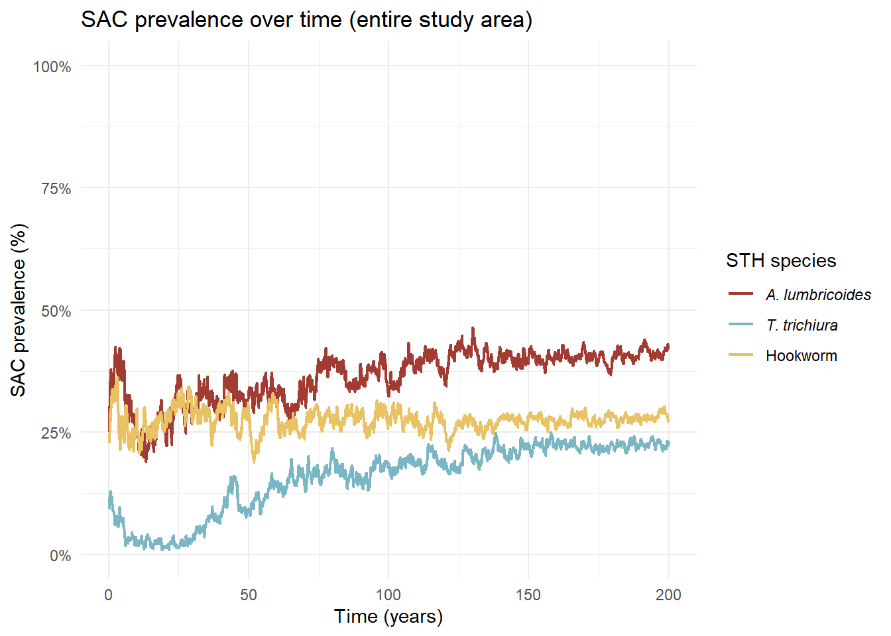
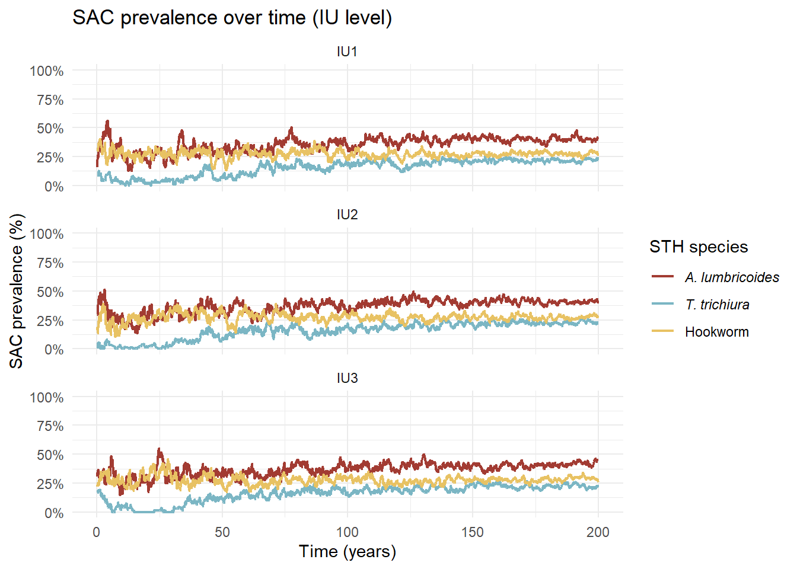
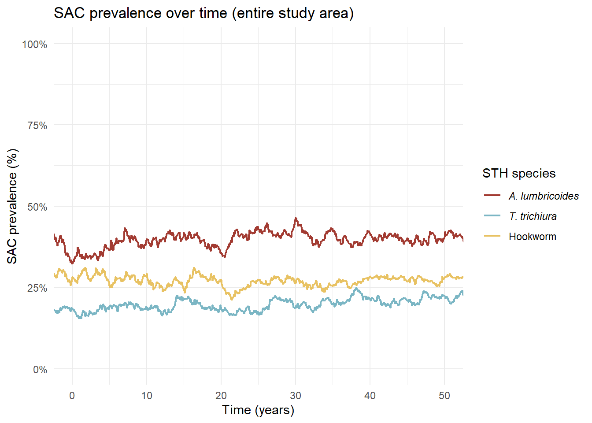
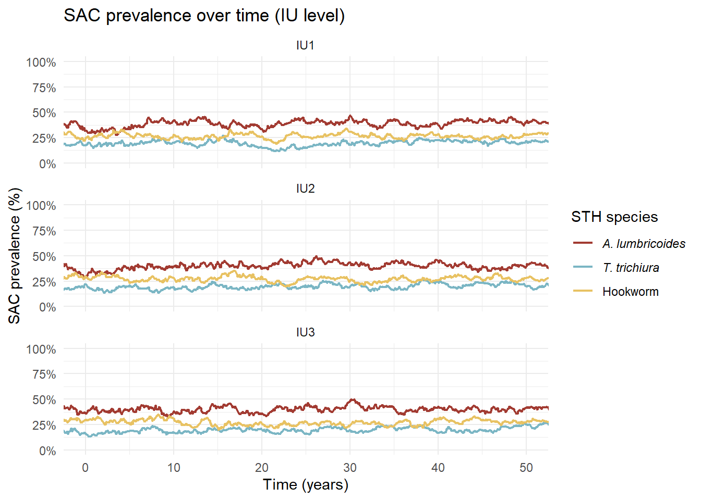
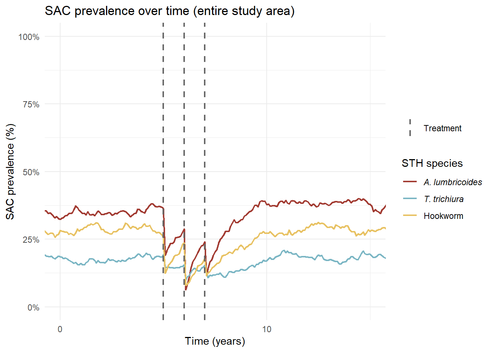
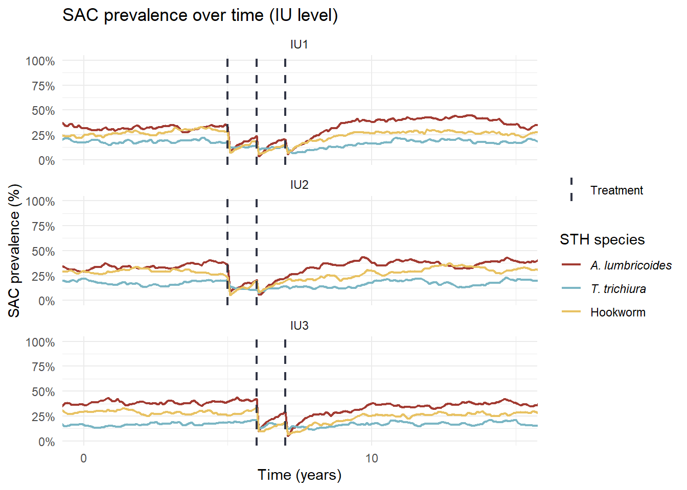

![]()
dt <- 1/12 # time step in years (monthly)
T <- 200*(1/dt) # number of time steps (200 years)
time <- 0 # inital timeMathematical modelling of soil-transmitted helminths on simulated data
Initialising Simulation
Choose time step and length of simulation.
Define species.
species <- c("ASC","TT","HKW")
n_species <- length(species)Human Demography
n_IU <- 3 # number of IUs
N0 <- 1000 # total population at time 0Define 5-year age groups.
age_groups <- data.frame(
group = c("Infant:0-1","pre-SAC:2-4",
"SAC:5-9","SAC:10-14",
"Adult:15-19","Adult:20-24","Adult:25-29",
"Adult:30-34","Adult:35-39","Adult:40-44",
"Adult:45-49","Adult:50-54","Adult:55-59",
"Adult:60-64","Adult:65-69","Adult:70-74",
"Adult:75-79","Adult:80+"),
lower = c(0,2,5,10,15,20,25,30,35,40,45,50,55,60,65,70,75,80)
)
# function to find age group based on current age
get_age_group <- function(age){
age_groups$group[findInterval(age, age_groups$lower)]
}Initialise population
pop <- data.frame(
id = 1:N0,
age = runif(N0, 0, 80), # randomly allocate ages
IU_home = sample(1:n_IU, N0, replace = TRUE), # randomly allocate home IUs
alive = TRUE
)
pop$age_group <- get_age_group(pop$age)Calculate morbidity rates from data.
pop12subcounty <- read.csv("Data/KenyaPop12_age_subcounty.csv")
subcountyID <- read.csv("Data/subcountyID.csv")
subcountyID <- subcountyID %>% rename(
ID = subcountyID
)
subcountyID <- subcountyID[order(subcountyID$ID),]
pop12subcounty <- merge(subcountyID, pop12subcounty, by = c("county", "subcounty"))
pop12subcounty <- pop12subcounty[order(pop12subcounty$ID),]
noDeaths <- read_excel("Data/Total deaths by select age group, both sexes combined (thousands).xlsx")
noDeaths[, 2:12] <- noDeaths[, 2:12] * 1000
mortality_y12 <- data.frame(
age_group = age_groups$group,
mortality = c(
noDeaths$`0-4`[noDeaths$Year == 2012] / (sum(pop12subcounty$pop12_0_1) + sum(pop12subcounty$pop12_2_4)),
noDeaths$`0-4`[noDeaths$Year == 2012] / (sum(pop12subcounty$pop12_0_1) + sum(pop12subcounty$pop12_2_4)),
noDeaths$`5-14`[noDeaths$Year == 2012] / (sum(pop12subcounty$pop12_5_9) + sum(pop12subcounty$pop12_10_14)),
noDeaths$`5-14`[noDeaths$Year == 2012] / (sum(pop12subcounty$pop12_5_9) + sum(pop12subcounty$pop12_10_14)),
noDeaths$`15-19`[noDeaths$Year == 2012] / (sum(pop12subcounty$pop12_15_19)),
noDeaths$`20-24`[noDeaths$Year == 2012] / (sum(pop12subcounty$pop12_20_24)),
noDeaths$`25-39`[noDeaths$Year == 2012] / (sum(pop12subcounty$pop12_25_29) + sum(pop12subcounty$pop12_30_34) + sum(pop12subcounty$pop12_35_39)),
noDeaths$`25-39`[noDeaths$Year == 2012] / (sum(pop12subcounty$pop12_25_29) + sum(pop12subcounty$pop12_30_34) + sum(pop12subcounty$pop12_35_39)),
noDeaths$`25-39`[noDeaths$Year == 2012] / (sum(pop12subcounty$pop12_25_29) + sum(pop12subcounty$pop12_30_34) + sum(pop12subcounty$pop12_35_39)),
noDeaths$`40-49`[noDeaths$Year == 2012] / (sum(pop12subcounty$pop12_40_44) + sum(pop12subcounty$pop12_45_49)),
noDeaths$`40-49`[noDeaths$Year == 2012] / (sum(pop12subcounty$pop12_40_44) + sum(pop12subcounty$pop12_45_49)),
noDeaths$`50-59`[noDeaths$Year == 2012] / (sum(pop12subcounty$pop12_50_54) + sum(pop12subcounty$pop12_55_59)),
noDeaths$`50-59`[noDeaths$Year == 2012] / (sum(pop12subcounty$pop12_50_54) + sum(pop12subcounty$pop12_55_59)),
noDeaths$`60-64`[noDeaths$Year == 2012] / (sum(pop12subcounty$pop12_60_64)),
noDeaths$`65-69`[noDeaths$Year == 2012] / (sum(pop12subcounty$pop12_65_69)),
noDeaths$`70-79`[noDeaths$Year == 2012] / (sum(pop12subcounty$pop12_70_74) + sum(pop12subcounty$pop12_75_79)),
noDeaths$`70-79`[noDeaths$Year == 2012] / (sum(pop12subcounty$pop12_70_74) + sum(pop12subcounty$pop12_75_79)),
noDeaths$`80+`[noDeaths$Year == 2012] / (sum(pop12subcounty$pop12_80p))
)
)Susceptibility
Using spline to estimate \(\beta_S(a)\) for 5-year age bands.
beta_lit <- data.frame(species = c("ASC", "TT", "HKW"), sus_0_1 = c(0.47, 0.3, 0.03), sus_2_4 = c(1.86, 1.28, 0.09), sus_5_14 = rep(1,3), sus_15p = c(0.56, 0.17, 2.5))
beta_lit <- data.frame(species = c(rep("ASC", 6), rep("TT", 6), rep("HKW", 6)),
age = rep(c(0, 1,3,10,52.5, 80), 3),
suscept = as.numeric(c(c(0, beta_lit[1,2:5], beta_lit[1,5]), c(0, beta_lit[2,2:5],beta_lit[2,5]),
c(0, beta_lit[3,2:5], beta_lit[3,5]))))
beta_mod_ASC <- splinefun(x = dplyr::filter(beta_lit, species == "ASC")$age, y = dplyr::filter(beta_lit, species == "ASC")$suscept, method = "monoH.FC")
beta_mod_TT <- splinefun(x = dplyr::filter(beta_lit, species == "TT")$age, y = dplyr::filter(beta_lit, species == "TT")$suscept, method = "monoH.FC")
beta_mod_HKW <- splinefun(x = dplyr::filter(beta_lit, species == "HKW")$age, y = dplyr::filter(beta_lit, species == "HKW")$suscept, method = "monoH.FC")
beta_infer <- data.frame(species = c(rep("ASC", 19), rep("TT", 19), rep("HKW", 19)),
age = rep(c(0,1,3,7,12,17,22,27,32,37,42,47,52,57,62,67,72,77,82), 3),
age_group = rep(c("Newborn", age_groups$group), 3),
suscept = rep(NA, 57))
beta_infer$suscept[beta_infer$species == "ASC"] <- beta_mod_ASC(dplyr::filter(beta_infer, species == "ASC")$age)
beta_infer$suscept[beta_infer$species == "TT"] <- beta_mod_TT(dplyr::filter(beta_infer, species == "TT")$age)
beta_infer$suscept[beta_infer$species == "HKW"] <- beta_mod_HKW(dplyr::filter(beta_infer, species == "HKW")$age)beta_ASC_plot <- ggplot(dplyr::filter(beta_infer, species == "ASC")) + geom_line(aes(age, suscept)) +
geom_point(data = dplyr::filter(beta_lit, species == "ASC"), aes(age, suscept)) +
xlab("Age") +
ylab("Susceptibility") +
ggtitle("Ascaris lumbricoides") +
theme_bw()
beta_TT_plot <- ggplot(dplyr::filter(beta_infer, species == "TT")) + geom_line(aes(age, suscept)) +
geom_point(data = dplyr::filter(beta_lit, species == "TT"), aes(age, suscept))+
xlab("Age") +
ylab("Susceptibility") +
ggtitle("Trichuris trichiura") +
theme_bw()
beta_HKW_plot <- ggplot(dplyr::filter(beta_infer, species == "HKW")) + geom_line(aes(age, suscept)) +
geom_point(data = dplyr::filter(beta_lit, species == "HKW"), aes(age, suscept))+
xlab("Age") +
ylab("Susceptibility") +
ggtitle("Hookworm") +
theme_bw()
grid.arrange(beta_ASC_plot, beta_TT_plot, beta_HKW_plot, nrow = 1)
Initial parameters
params <- list(
dt = dt,
n_IU = n_IU,
species = species,
# demography
# yearly birth rate for Kenya (2019 census)
birth_rate = 0.0279,
# age-specific yearly mortality rates for Kenya (2012 census)
death_rates = setNames(mortality_y12$mortality,
mortality_y12$age_group),
# natural loss
## per-year worm loss rates
## (ASC:1.5y, TT:1.5y, HKW:2.5y) (1/years)
gamma = c(ASC = 0.667, TT = 0.667, HKW = 0.5),
## decay of infectious pressure
## mu = ln(2) / half life (half life ASC:7m, TT:5.5m, HKW:4m)
mu = c(ASC = (log(2)/(7/12)),
TT = (log(2)/(5.5/12)),
HKW = (log(2)/(4/12))),
# FOI saturation
## IU-specific infectivity for each IU
## can be changed based on WASH data/calibrated with data
sigma = c(ASC = 0.1, TT = 0.1, HKW = 0.1),
## individual worm saturation
W_half = c(ASC = 7, TT = 50, HKW = 35),
## density dependence for egg contribution from heavy infections
egg_half = c(ASC = 7, TT = 40, HKW = 30),
## saturation of environment
E_half = c(ASC = 50, TT = 40, HKW = 30),
## rate of adult worm establishment
lambda = c(ASC = 1.2, TT = 1.1, HKW = 3.0),
# drug efficacies (egg reduction rates) by species
kappa = list(
Albendazole = c(ASC = 0.99, TT = 0.50, HKW = 0.90),
Mebendazole = c(ASC = 0.98, TT = 0.66, HKW = 0.61)
),
# IU movement
## rows = home IU
## columns = IU visited
## fraction of time spent in each IU (alpha)
movement_matrix = matrix(
c(0.7,0.2,0.1,
0.2,0.6,0.2,
0.1,0.2,0.7),
nrow = n_IU, byrow = TRUE
)
)
# age-dependent susceptibility
beta_filtered <- subset(beta_infer, age_group != "Newborn")
params$beta <- lapply(split(beta_filtered, beta_filtered$species), function(df) {
setNames(df$suscept, df$age_group)
})
params$beta <- params$beta[species]
# age-dependent contribution to environment
params$rho <- params$betaDefining functions
Initial worm burden and environmental reservoir.
initialise_infection_vec <- function(pop, prev_SAC_IU_data, params, env_scale = 1){
n_ind <- nrow(pop)
species <- colnames(prev_SAC_IU_data)
n_species <- length(species)
n_IU <- nrow(prev_SAC_IU_data)
# individual beta matrix (individual × species)
susc_mat <- matrix(NA, nrow = n_ind, ncol = n_species,
dimnames = list(pop$id, species))
for(s in species){
susc_mat[, s] <- params$beta[[s]][pop$age_group]
}
# probability of initial infection depends on IU prevalence × beta
prob_inf_mat <- matrix(0, n_ind, n_species)
for(s in 1:n_species){
prob_inf_mat[,s] <- prev_SAC_IU_data[cbind(pop$IU_home, rep(s, n_ind))] * susc_mat[,s]
}
# assign initial infection status
infected_mat <- matrix(runif(n_ind * n_species), n_ind, n_species) < prob_inf_mat
# assign initial worm burdens
W <- matrix(0, n_ind, n_species, dimnames = list(pop$id, species))
for(s in 1:n_species){
W[,s] <- infected_mat[,s] * rpois(n_ind, lambda = params$lambda[s])
}
# initialise environmental reservoirs at IU level
E <- matrix(0, n_IU, n_species, dimnames = list(paste0("IU",1:n_IU), species))
for(iu in 1:n_IU){
idx <- pop$IU_home == iu
if(sum(idx) > 0){
# total worm burden per species in this IU
W_mean <- colMeans(W[idx, , drop = FALSE])
E[iu, ] <- rpois(n_species, lambda = W_mean * env_scale)
}
}
list(W = W, E = E)
}Update demography.
update_demography <- function(pop, W, params){
dt <- params$dt
# aging
pop$age <- pop$age + dt
pop$age_group <- get_age_group(pop$age)
death_rates <- params$death_rates
# convert mortality rate to per-time step probabilities
death_p <- 1 - exp(-death_rates[pop$age_group] * dt)
# update alive status
pop$alive <- pop$alive & (runif(nrow(pop)) > death_p)
# births
n_births <- rpois(1, params$birth_rate * sum(pop$alive) * dt)
# if there are any births in this time step, assign them ids and add to population
if(n_births > 0){
new_ids <- max(pop$id) + seq_len(n_births)
pop <- rbind(
pop,
data.frame(
id = new_ids,
age = 0,
IU_home = sample(1:params$n_IU, n_births, TRUE),
alive = TRUE,
age_group = "Infant:0-1"
)
)
# add new births to W, with worm burden of 0
W <- rbind(
W,
matrix(0, n_births, ncol(W),
dimnames = list(new_ids, colnames(W)))
)
}
list(pop = pop, W = W)
}Define alpha for each individual.
make_alpha <- function(pop, params){
n <- nrow(pop)
n_IU <- params$n_IU
alpha <- matrix(0, nrow = n, ncol = n_IU)
# children: all time in home IU
is_child <- !grepl("^Adult", pop$age_group)
alpha[cbind(which(is_child), pop$IU_home[is_child])] <- 1
# adults: fractional time allocation from movement matrix
idx <- which(!is_child)
if(length(idx) > 0){
alpha[idx, ] <- params$movement_matrix[pop$IU_home[idx], ]
}
alpha
}Update worm burden.
update_worms <- function(pop, W, E, alpha, params){
dt <- params$dt
n <- nrow(W)
species <- params$species
beta_mat <- sapply(
species,
function(s) params$beta[[s]][pop$age_group]
)
# alpha * E * sigma * beta
exposure_env <- alpha %*% E
sigma_mat <- matrix(params$sigma[pop$IU_home], nrow = n, ncol = length(species))
exposure <- exposure_env * sigma_mat * beta_mat
# within-host density dependence
f_host <- sweep(
W, 2, params$W_half,
function(w, k) 1 / (1 + w / k)
)
# infection probability
p_inf <- 1 - exp(-exposure * f_host * dt)
p_inf <- pmin(p_inf, 1)
# worm survival
surv_p <- unname(exp(-params$gamma * dt))
W_surv <- matrix(
rbinom(n * n_species,
size = as.vector(W),
prob = rep(surv_p, each = n)),
nrow = n
)
# acquired worms
W_new <- matrix(
rpois(n * n_species,
lambda = p_inf * rep(params$lambda, each = n)),
nrow = n
)
# total worms
W_next <- W_surv + W_new
rownames(W_next) <- rownames(W)
colnames(W_next) <- species
W_next
}Update environmental reservoir.
update_environment <- function(pop, W, E, alpha, params){
dt <- params$dt
# age-dependent egg contribution
rho_mat <- sapply(
params$species,
function(s) params$rho[[s]][pop$age_group]
)
# density-dependent egg contribution to environment
W_eff <- sweep(
W,
2,
params$egg_half,
function(w, k) w / (1 + w / k)
)
# aggregate contributions to each IU
contrib <- t(alpha) %*% (W_eff * rho_mat)
# apply E_half saturation
lambda_env <- contrib / (1 + contrib / matrix(rep(params$E_half,
each = nrow(contrib)),
nrow=nrow(contrib)))
# surviving environmental pressure
mu_vec <- unname(params$mu)
E_surv <- sweep(E, 2, exp(-mu_vec*dt), "*")
# new environmental pressure
E_new <- lambda_env * dt
# total environmental pressure
E_surv + E_new
}Apply treatment.
apply_treatment <- function(pop, W, treatment_schedule, t, params){
# case 1: no treatment defined
if (is.null(treatment_schedule)) {
return(W)
}
# subset schedule for this time step
sched <- treatment_schedule[treatment_schedule$time == t, , drop = FALSE]
# case 2: no treatment at this time step
if (nrow(sched) == 0) {
return(W)
}
# loop over each IU in the schedule
for(i in 1:nrow(sched)){
IU_treat <- sched$IU[i]
tau_treat <- sched$tau[i]
drug_treat <- sched$drug[i]
# SACs in this IU
sac_idx <- which(pop$age_group %in% c("SAC:5-9","SAC:10-14") &
pop$IU_home == IU_treat)
if(length(sac_idx) == 0) next
# apply coverage: randomly choose which SACs are treated based on tau
treated <- sac_idx[runif(length(sac_idx)) < tau_treat]
if(length(treated) == 0) next
# kill worms by species-specific efficacy
for(s in seq_along(params$species)){
sp <- params$species[s]
efficacy <- params$kappa[[drug_treat]][sp]
W[treated, sp] <- rbinom(length(treated), size = W[treated, sp],
prob = 1 - efficacy)
}
}
W
}Single time step.
step_model <- function(state, params, t, treatment_schedule){
# 1. demography
demog <- update_demography(state$pop, state$W, params)
pop <- demog$pop
W <- demog$W
# 2. fractional exposure
alpha <- make_alpha(pop, params)
# 3. individual infection
W <- update_worms(pop, W, state$E, alpha, params)
# 4. environment
E <- update_environment(pop, W, state$E, alpha, params)
# 5. treatment
W <- apply_treatment(pop, W, treatment_schedule, t, params)
list(pop = pop, W = W, E = E)
}Equilibrium calibration.
# run to equilibrium
equilibrium_prevalence <- function(params,
pop_init,
W_init,
E_init,
T_eq = 2400,
return_state = FALSE){
# initialise population
state <- list(pop = pop_init, W = W_init, E = E_init)
# run model with no treatment for T_eq time steps (until equilibrium)
for(t in 1:T_eq){
state <- step_model(state, params, t, treatment_schedule = NULL)
}
# return equilibrium state (pop, W, E) if return_state = TRUE
if(return_state){
return(state)
}
# return equilibrium SAC prevalence
SAC_groups <- c("SAC:5-9", "SAC:10-14")
sac_idx <- state$pop$age_group %in% SAC_groups & state$pop$alive
if(sum(sac_idx) == 0){
return(setNames(rep(0, length(params$species)), params$species))
}
colMeans(state$W[sac_idx, , drop = FALSE] > 0)
}
# calibration of sigma to target endemic prevalence
calibrate_sigma <- function(params,
pop_init,
W_init,
E_init,
target_prev,
sigma_bounds = c(0.005, 0.2)){
sigma_new <- params$sigma # update sigma
for(iu in 1:params$n_IU){
# objective function for optimisation
obj_fn <- function(log_sigma){ # log(sigma) so sigma > 0
# retrieve parameters
params_tmp <- params
# replace with current sigma
params_tmp$sigma[iu] <- exp(log_sigma)
# run to equilibrium
state_eq <- equilibrium_prevalence(params_tmp,
pop_init,
W_init,
E_init,
return_state = TRUE)
# extract SAC prevalence
sac_idx <- state_eq$pop$age_group %in% c("SAC:5-9","SAC:10-14") &
state_eq$pop$alive &
state_eq$pop$IU_home == iu
if(sum(sac_idx) == 0) return(1e6)
prev_model <- colMeans(state_eq$W[sac_idx, ] > 0)
prev_target <- target_prev[iu, ]
# sum of squared errors across all species
sum((prev_model - prev_target)^2)
}
# optimise sigma to minimise squared error
opt <- optimize(
obj_fn,
interval=log(sigma_bounds))
# store optimal beta value for current species
sigma_new[iu] <- exp(opt$minimum)
}
# return calibrated sigma
sigma_new
}Simulation
Calibration
Set simulation parameters for calibration (no treatment).
# set parameters for simulation
## set plausible ranges for prevalence
prev_bounds <- data.frame(
species = species,
min = c(0.30, 0.10, 0.20), # ASC, TT, HKW lower bounds
max = c(0.40, 0.20, 0.35) # ASC, TT, HKW upper bounds
)
## generate random SAC prevalence per IU
prev_SAC_IU_data <- sapply(1:n_species, function(s) {
runif(n_IU,
min = prev_bounds$min[s],
max = prev_bounds$max[s])
})
rownames(prev_SAC_IU_data) <- paste0("IU", 1:n_IU)
colnames(prev_SAC_IU_data) <- species
# initialise W, E based on SAC prev data
init <- initialise_infection_vec(pop, prev_SAC_IU_data, params, env_scale = 0.2)
W <- init$W
E <- init$E
# set treatment schedule
treatment_schedule <- NULL # no treatment for calibration
# set target prevalence for calibration of sigma
target_prev <- prev_SAC_IU_dataCalibrate \(\sigma(c)\).
# run calibration and replace sigma
params$sigma <- calibrate_sigma(params, pop, W, E, target_prev)
params$sigma ASC TT HKW
0.005151636 0.005276932 0.005258598 # store equilibrium state
state_eq <- equilibrium_prevalence(params, pop, W, E, return_state=TRUE)Baseline simulation
# pre-allocate list to store results
results <- vector("list", T) # length = number of timesteps
# initial state
state <- list(pop = pop, W = W, E = state_eq$E) # initialise with equilibrium E
set.seed(123)
for(t in 1:T){
results[[t]] <- list(
pop = state$pop,
W = state$W,
E = state$E
)
state <- step_model(state, params, t, treatment_schedule)
}Prepare results.
# find SAC prevalence (total and IU level)
SAC_groups <- c("SAC:5-9", "SAC:10-14")
## total SAC prevalence
prev_SAC <- sapply(results, function(state) {
sac_idx <- state$pop$age_group %in% SAC_groups & state$pop$alive
if (sum(sac_idx) == 0) return(rep(0, n_species))
W_sac <- state$W[sac_idx, , drop = FALSE]
colSums(W_sac > 0) / nrow(W_sac)
})
### timesteps × species
prev_SAC <- t(prev_SAC)
colnames(prev_SAC) <- species
## IU level SAC prevalence
prev_SAC_IU <- lapply(results, function(state) {
sac_idx <- state$pop$age_group %in% SAC_groups & state$pop$alive
if (sum(sac_idx) == 0) {
return(matrix(
0, nrow = n_IU, ncol = n_species,
dimnames = list(paste0("IU", 1:n_IU), species)
))
}
pop_sac <- state$pop[sac_idx, , drop = FALSE]
W_sac <- state$W[sac_idx, , drop = FALSE]
sapply(1:n_IU, function(iu) {
in_IU <- pop_sac$IU_home == iu
if (sum(in_IU) == 0) return(rep(0, n_species))
colSums(W_sac[in_IU, , drop = FALSE] > 0) / sum(in_IU)
})
})
### time × IU × species
prev_SAC_IU <- abind(prev_SAC_IU, along = 3)
prev_SAC_IU <- aperm(prev_SAC_IU, c(3, 2, 1))
dimnames(prev_SAC_IU) <- list(
time = 1:T,
IU = paste0("IU", 1:n_IU),
species = species
)Prepare time for plotting.
time_vec <- seq(dt, T * dt, by = dt)
treatment_times <- unique(treatment_schedule$time) * dt
# labels and colours
species_cols <- c(
"ASC" = "#A23B32",
"TT" = "#7BB6C4",
"HKW" = "#E8C263"
)
species_labs <- c(
"ASC" = expression(italic("A. lumbricoides")),
"TT" = expression(italic("T. trichiura")),
"HKW" = "Hookworm"
)Plot population-level SAC prevalence for entire simulation.
df_overall <- melt(
prev_SAC,
varnames = c("time", "species"),
value.name = "prevalence"
)
df_overall$time <- df_overall$time * dt
ggplot(df_overall, aes(x = time, y = prevalence, color = species)) +
geom_line(linewidth = 0.8) +
scale_color_manual(
name = "STH species",
values = species_cols,
labels = species_labs
) +
scale_y_continuous(
limits = c(0, 1),
labels = scales::percent_format(accuracy = 1)
) +
coord_cartesian(xlim = c(0, 200)) +
labs(
x = "Time (years)",
y = "SAC prevalence (%)",
title = "SAC prevalence over time (entire study area)"
) +
theme_minimal()
Plot IU-level SAC prevalence for entire simulation.
df_IU <- melt(
prev_SAC_IU,
varnames = c("time", "IU", "species"),
value.name = "prevalence"
)
df_IU$time <- df_IU$time * dt
ggplot(df_IU, aes(x = time, y = prevalence, color = species)) +
geom_line(linewidth = 0.8) +
scale_color_manual(
name = "STH species",
values = species_cols,
labels = species_labs
) +
scale_y_continuous(
limits = c(0, 1),
labels = scales::percent_format(accuracy = 1)
) +
facet_wrap(~ IU, ncol = 1) +
labs(
x = "Time (years)",
y = "SAC prevalence (%)",
title = "SAC prevalence over time (IU level)"
) +
theme_minimal()
Plot baseline equilibrium at population-level SAC prevalence for entire simulation.
# Plot year 100 to 150
ggplot(df_overall, aes(x = time, y = prevalence, color = species)) +
geom_line(linewidth = 0.8) +
scale_color_manual(
name = "STH species",
values = species_cols,
labels = species_labs
) +
scale_y_continuous(
limits = c(0, 1),
labels = scales::percent_format(accuracy = 1)
) +
coord_cartesian(xlim = c(100, 150)) + # select 100 to 150 years on axis
scale_x_continuous( # change labels to 0 to 50
labels = function(x) x - 100,
breaks = seq(100, 150, by = 10)
) +
labs(
x = "Time (years)",
y = "SAC prevalence (%)",
title = "SAC prevalence over time (entire study area)"
) +
theme_minimal()
Plot baseline equilibrium at IU-level SAC prevalence for entire simulation.
ggplot(df_IU, aes(x = time, y = prevalence, color = species)) +
geom_line(linewidth = 0.8) +
scale_color_manual(
name = "STH species",
values = species_cols,
labels = species_labs
) +
scale_y_continuous(
limits = c(0, 1),
labels = scales::percent_format(accuracy = 1)
) +
coord_cartesian(xlim = c(100, 150)) + # select 100 to 150 years on axis
scale_x_continuous( # change labels to 0 to 50
labels = function(x) x - 100,
breaks = seq(100, 150, by = 10)
) +
facet_wrap(~ IU, ncol = 1) +
labs(
x = "Time (years)",
y = "SAC prevalence (%)",
title = "SAC prevalence over time (IU level)"
) +
theme_minimal()
Treatment simulation
Add treatment schedule.
treatment_schedule <- data.frame(
time = c(105/dt, 105/dt, 106/dt, 106/dt, 106/dt, 107/dt, 107/dt), # timestep of treatment
IU = c(1, 2, 1, 2, 3, 1, 3), # IU receiving treatment
tau = c(0.8, 0.8, 0.8, 0.8, 0.8, 0.8, 0.8), # coverage for SACs
drug = c("Albendazole", "Albendazole", "Albendazole", "Albendazole", "Albendazole", "Albendazole", "Albendazole")
)# pre-allocate list to store results
results <- vector("list", T) # length = number of timesteps
# initial state
state <- list(pop = pop, W = W, E = state_eq$E) # initialise with equilibrium E
set.seed(123)
for(t in 1:T){
results[[t]] <- list(
pop = state$pop,
W = state$W,
E = state$E
)
state <- step_model(state, params, t, treatment_schedule)
}Prepare results.
# find SAC prevalence (total and IU level)
SAC_groups <- c("SAC:5-9", "SAC:10-14")
## total SAC prevalence
prev_SAC <- sapply(results, function(state) {
sac_idx <- state$pop$age_group %in% SAC_groups & state$pop$alive
if (sum(sac_idx) == 0) return(rep(0, n_species))
W_sac <- state$W[sac_idx, , drop = FALSE]
colSums(W_sac > 0) / nrow(W_sac)
})
### timesteps × species
prev_SAC <- t(prev_SAC)
colnames(prev_SAC) <- species
## IU level SAC prevalence
prev_SAC_IU <- lapply(results, function(state) {
sac_idx <- state$pop$age_group %in% SAC_groups & state$pop$alive
if (sum(sac_idx) == 0) {
return(matrix(
0, nrow = n_IU, ncol = n_species,
dimnames = list(paste0("IU", 1:n_IU), species)
))
}
pop_sac <- state$pop[sac_idx, , drop = FALSE]
W_sac <- state$W[sac_idx, , drop = FALSE]
sapply(1:n_IU, function(iu) {
in_IU <- pop_sac$IU_home == iu
if (sum(in_IU) == 0) return(rep(0, n_species))
colSums(W_sac[in_IU, , drop = FALSE] > 0) / sum(in_IU)
})
})
### time × IU × species
prev_SAC_IU <- abind(prev_SAC_IU, along = 3)
prev_SAC_IU <- aperm(prev_SAC_IU, c(3, 2, 1))
dimnames(prev_SAC_IU) <- list(
time = 1:T,
IU = paste0("IU", 1:n_IU),
species = species
)Prepare treatment for plotting.
treatment_times <- unique(treatment_schedule$time) * dtPlot treatment effect at population-level SAC prevalence.
df_overall <- melt(
prev_SAC,
varnames = c("time", "species"),
value.name = "prevalence"
)
df_overall$time <- df_overall$time * dt
# Plot year 100 to 115
ggplot(df_overall, aes(x = time, y = prevalence, color = species)) +
geom_line(linewidth = 0.8) +
geom_vline(
aes(xintercept = time, linetype = "Treatment"),
data = data.frame(time = treatment_times),
color = "grey40",
linewidth = 0.8
) +
scale_color_manual(
name = "STH species",
values = species_cols,
labels = species_labs
) +
scale_linetype_manual(
name = NULL,
values = c("Treatment" = "dashed")
) +
scale_y_continuous(
limits = c(0, 1),
labels = scales::percent_format(accuracy = 1)
) +
coord_cartesian(xlim = c(100, 115)) + # select 105 to 120 years on axis
scale_x_continuous( # change labels to 0 to 50
labels = function(x) x - 100,
breaks = seq(100, 115, by = 10)
) +
labs(
x = "Time (years)",
y = "SAC prevalence (%)",
title = "SAC prevalence over time (entire study area)"
) +
theme_minimal()
Plot treatment effect at IU-level SAC prevalence.
df_IU <- melt(
prev_SAC_IU,
varnames = c("time", "IU", "species"),
value.name = "prevalence"
)
df_IU$time <- df_IU$time * dt
treat_lines <- data.frame( # only plot treatment lines on treated IUs
time = treatment_schedule$time * dt,
IU = paste0("IU", treatment_schedule$IU)
)
ggplot(df_IU, aes(x = time, y = prevalence, color = species)) +
geom_line(linewidth = 0.8) +
geom_vline(
data = treat_lines,
aes(xintercept = time, linetype = "Treatment"),
color = "#313545",
linewidth = 0.8
) +
scale_color_manual(
name = "STH species",
values = species_cols,
labels = species_labs
) +
scale_linetype_manual(
name = NULL,
values = c("Treatment" = "dashed")
) +
scale_y_continuous(
limits = c(0, 1),
labels = scales::percent_format(accuracy = 1)
) +
coord_cartesian(xlim = c(100, 115)) + # select 100 to 115 years on axis
scale_x_continuous( # change labels to 0 to 50
labels = function(x) x - 100,
breaks = seq(100, 115, by = 10)
) +
facet_wrap(~ IU, ncol = 1) +
labs(
x = "Time (years)",
y = "SAC prevalence (%)",
title = "SAC prevalence over time (IU level)"
) +
theme_minimal()